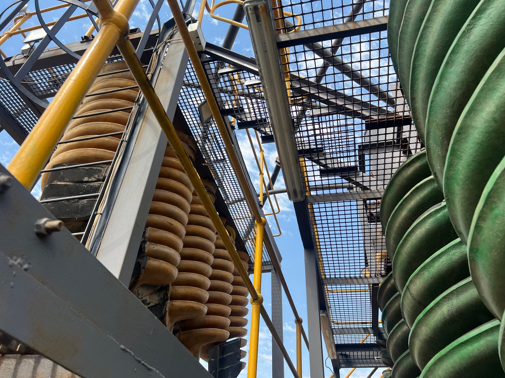

About Mineral Exco
Founded in 2021, Mineral Exco (Pty) Ltd specialises in processing chromite-bearing material to produce concentrated chrome ore through crushing, screening, and washing. The company has established a strong and reputable presence in the industry, recognised for its optimised operations and production efficiency.

Operational Efficiency
Advanced technology and optimized processes ensure maximum recovery and industry-leading performance.

Commitment to Quality
Our concentrated products consistently meet the highest quality standards through precise execution and strict quality controls.

Innovation & R&D
Continuous investment in research and development drives improved recovery methods and adoption of new technologies.